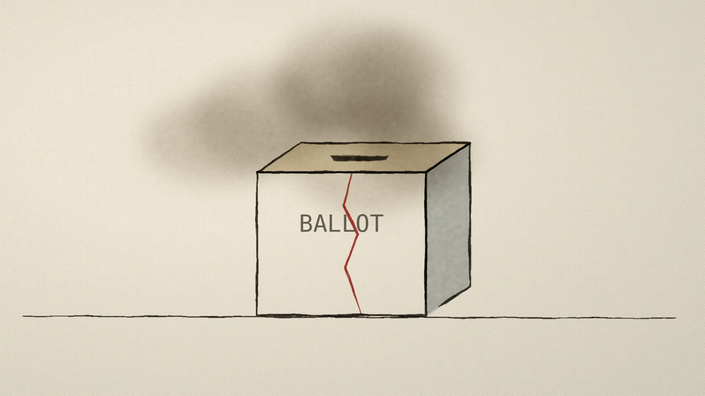

When an election result is disputed
Lesson 4 of 8

1 September 2017: “null and void”
On 8 August 2017 Kenyans voted. The electoral commission declared Uhuru Kenyatta president, with roughly 54% to Raila Odinga’s 45%. Odinga went to the Supreme Court.
His case wasn’t mainly “we got more votes”. It was “you didn’t follow the process”: results were sent without the polling-station forms that prove them.
On 1 September 2017, the Supreme Court agreed, 4 judges to 2. It declared the presidential election invalid and ordered a fresh one. It was one of the very few times a court anywhere had cancelled a presidential election.
The story didn’t end neatly. Odinga boycotted the fresh election on 26 October 2017. Kenyatta won it with about 98% of the votes, on a turnout under 40%. On 20 November 2017 the Supreme Court upheld that result.
The lesson isn’t who was right. It’s this: in Kenya, a disputed election goes to court, and the court can say no.
The rules start at your polling station
The Constitution says IEBC must make sure that (Art 86):
- the voting system is simple, accurate, verifiable, secure, accountable and transparent;
- the votes are counted, tallied and announced at each polling station by the presiding officer;
- results from polling stations are openly and accurately collated and announced by the returning officer;
- election materials are kept safe.
Why it matters to you: if the result announced at your polling station isn’t the one that arrives at the tallying centre, that’s evidence. Agents, observers and ordinary voters who note the announced figures help keep the count honest.
Who decides which dispute, and how fast
| Dispute about… | Goes to | File within | Decided within |
|---|---|---|---|
| The President’s election | Supreme Court (Art 140) | 7 days after the result is declared | 14 days after filing. The decision is final. |
| An MP, County Woman Member or Senator | High Court (Art 105) | 28 days after IEBC declares the result (Art 87(2)) | 6 months (Art 105(2)) |
| A Governor | High Court in or nearest the county (Elections Act, s.75(1)) | 28 days (Art 87(2)) | 6 months (s.75(2)) |
| An MCA | A Resident Magistrate’s Court chosen by the Chief Justice (s.75(1A)) | 28 days (Art 87(2)) | 6 months; appeal to the High Court on points of law within 30 days (s.75(4)) |
| Party nominations and disputes before the results | IEBC settles nomination disputes (Art 88(4)(e)) | (check iebc.or.ke) |
A petition must be served (delivered to the other side) within 15 days of filing (Elections Act, s.76(1)(a)). Service can be direct, or by an advert in a newspaper with national circulation (Art 87(3)).
If the Supreme Court finds a presidential election invalid, a fresh election must be held within 60 days (Art 140(3)). That’s what happened in 2017.
What a court can do
For a county seat, the court can declare whether the winner was validly elected, declare who was validly elected instead, or order a fresh election (Elections Act, s.75(3)).
What an election petition is not
- It’s not a protest. You have the right to demonstrate peacefully and unarmed (Art 37). But burning, beating and blocking are crimes, and they hurt your neighbours, not the politicians.
- It’s not a WhatsApp campaign. A court decides on evidence: forms, figures, witnesses.
- It’s not free or simple. It’s a formal court case with strict deadlines. Get a lawyer early.
What you can do
- Note the result announced at your polling station (it’s announced publicly, Art 86(b)). A photo of the posted result, if allowed, is useful evidence.
- Volunteer as a party agent or with an accredited observer group, if you want to watch the count.
- Don’t spread “results” from unofficial sources. Wait for IEBC’s declaration, and for the court if there’s a dispute.
- If you have evidence of a problem, give it to IEBC, to a candidate’s lawyers, or to an observer group, quickly. The deadlines are short: 7 days for the presidency, 28 days for the rest.
- Keep the peace. If violence is being planned in your area, report it (see below).
Where to go
| If… | Go to |
|---|---|
| You saw a problem at a polling station or tallying centre | IEBC: (020) 2877000, info@iebc.or.ke, complaint forms |
| You want to read past election judgments | Kenya Law: kenyalaw.org |
| People are stirring up violence or hatred after a result | NCIC: toll free / SMS 1547 |
| Police use force against peaceful people | IPOA: toll free 1559 |
| You need a lawyer and can’t afford one | National Legal Aid Service: toll free 0800 720 640 |
Full details are in WHERE-TO-GO.md.
Quick quiz
- Which court hears a challenge to a presidential election, and how long does a petitioner have to file?
- How many days does that court have to decide?
- Your MCA’s election looks rigged. Which court, and what’s the deadline to file?
- Where must votes first be counted and announced?
- What happened on 1 September 2017?
Answers
- The Supreme Court, within 7 days of the declaration (Art 140(1)).
- 14 days after the petition is filed, and its decision is final (Art 140(2)).
- A Resident Magistrate’s Court chosen by the Chief Justice (Elections Act, s.75(1A)), within 28 days of IEBC’s declaration (Art 87(2)).
- At the polling station, by the presiding officer (Art 86(b)).
- The Supreme Court declared the presidential election invalid, 4 to 2, and ordered a fresh election.